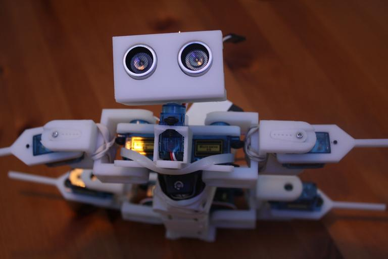

Professional Experience in Autonomous Vehicles, Unmanned Drones, and Surgical Robotics.
I'm Sai Peram, a current undergraduate student majoring in Electrical and Computer Engineering and minoring in Robotics at UT Austin. I am passionate about robotics and AI technologies to boost real world applications. My work spans autonomous vehicles, unmanned aerial vehicles (drones), and surgical robotics.

Check out my Personal Website to learn more about me.